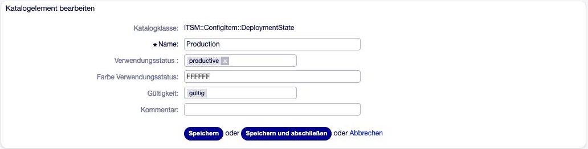

Verwendungs- und Vorfallstatus¶
Jedes Config Item hat zwei Status, die OTOBO getrennt führt:
- Verwendungsstatus (Deployment State)
Wo steht das Config Item in seinem Lebenszyklus? — Geplant, Produktiv, In Reparatur, Außer Dienst …
- Vorfallstatus (Incident State)
Funktioniert es? — Operativ, Warnung, Vorfall.
Beide Status sind Einträge im General Catalog und lassen sich dort umbenennen, ergänzen oder ungültig setzen. Entscheidend für das Verhalten von OTOBO ist aber nicht der Name, sondern die Funktionalität, die jedem Status zugeordnet ist.
General Catalog: die Kataloge der CMDB¶
Unter Admin → General Catalog pflegt die CMDB diese Katalogklassen:
Katalogklasse |
Inhalt |
|---|---|
|
die CMDB-Klassen (siehe Klassen einrichten) |
|
Kategorien der CMDB-Übersicht; |
|
Rollen (siehe Rollen einrichten) |
|
Verwendungsstatus |
|
Vorfallstatus (aus dem Paket ITSMCore) |
|
Auswahlwerte Yes / No |
Eine Katalogklasse erscheint in der Liste erst, wenn sie mindestens einen Eintrag hat.

Abb. 8 Verwendungsstatus im General Catalog: Funktionalität und Farbe¶
Verwendungsstatus¶
Mitgelieferte Status¶
Name |
Deutsche Oberfläche |
Funktionalität |
|---|---|---|
Planned |
Geplant |
preproductive |
Test/QA |
Test/QS |
preproductive |
Pilot |
Pilotbetrieb |
productive |
Production |
Produktiv |
productive |
Maintenance |
In Wartung |
productive |
Repair |
In Reparatur |
productive |
Review |
Unter Review |
productive |
Expired |
Abgelaufen |
productive |
Inactive |
Inaktiv |
postproductive |
Retired |
Außer Dienst |
postproductive |
Jeder Status hat zwei Eigenschaften:
- Funktionalität —
preproductive,productiveoderpostproductive Bestimmt, wie OTOBO Config Items in diesem Status behandelt (siehe unten). In der deutschen Oberfläche heißt das Auswahlfeld missverständlich Verwendungsstatus.
- Farbe (Feld Farbe Verwendungsstatus)
Farbe des Status in der CMDB-Übersicht, als Hexwert ohne
#.
Warnung
Bei jedem Update des Pakets ITSMConfigurationManagement setzt OTOBO die Funktionalität der zehn mitgelieferten Status (erkannt am Namen) wieder auf die Werte der Tabelle. Wer einem dieser Status eine andere Funktionalität geben will, legt dafür besser einen eigenen Status an.
Was die Funktionalität bewirkt¶
Verhalten |
pre- |
produktiv |
post- |
|---|---|---|---|
Erscheint in der CMDB-Übersicht |
ja |
ja |
nein |
Wird bei einer neuen Klassendefinition mitgenommen (siehe Versionen der Definition) |
ja |
ja |
nein |
Beeinflusst den Vorfallstatus verknüpfter Services |
nein |
ja |
nein |
Wird von |
ja |
ja |
nein |
Config Items in einem postproductive Status verschwinden also aus der Übersicht, bleiben aber über die Suche auffindbar. Das ist der vorgesehene Weg, Geräte auszumustern, ohne sie zu löschen.
Bemerkung
Die Vererbung des Vorfallstatus zwischen Config Items (siehe Verknüpfungen und Vorfallstatus-Vererbung) berücksichtigt den Verwendungsstatus nicht: Auch ein Config Item Außer Dienst gibt eine Warnung weiter und kann eine erhalten.
Vorfallstatus¶
Mitgeliefert werden drei Status, jeweils mit einer Funktionalität und einer Signalfarbe:
Name |
Deutsche Oberfläche |
Funktionalität |
Signal |
|---|---|---|---|
Operational |
Operativ |
operational |
grün |
Warning |
Warnung |
warning |
gelb |
Incident |
Vorfall |
incident |
rot |
In der Bearbeiten-Maske und in der Sammelaktion stehen nur Status mit der Funktionalität operational und incident zur Auswahl. Warning setzt OTOBO selbst, wenn ein abhängiges Config Item einen Vorfall hat (siehe Verknüpfungen und Vorfallstatus-Vererbung).
Jedes Config Item führt deshalb zwei Werte:
den eigenen Vorfallstatus der Version, so wie ihn ein Agent gesetzt hat, und
den aktuellen Vorfallstatus (Current Incident State), der die Vererbung einschließt und in Übersicht und Signalspalten angezeigt wird.
Warnung
Die Vererbung braucht einen gültigen Status mit der Funktionalität warning. Den Status Warning daher nicht ungültig setzen.
Kategorien¶
Die CMDB-Übersicht gliedert die Klassen in Kategorien — etwa Hardware,
Software, Verträge. Kategorien sind Einträge der Katalogklasse
ITSM::ConfigItem::Class::Category; welche Kategorien eine Klasse hat, steht in
ihren Eigenschaften (siehe Klassen einrichten). Eine Klasse kann in mehreren
Kategorien stehen.
ITSMConfigItem::Frontend::AgentITSMConfigItem###DefaultCategoryKategorie, mit der die Übersicht öffnet (Voreinstellung
All).
Automatische Tickets: CMDB-Benachrichtigungen und Lizenzzählung¶
Die klassischen Ticket-Benachrichtigungen und der Generic Agent kennen keine Ereignisse von Config Items. Für zwei häufige Fälle bringt die CMDB aber eigene Mechanismen mit, die Tickets anlegen.
CMDB-Benachrichtigungen zu einem Datum¶
Typischer Einsatz: 30 Tage vor Ablauf einer Lizenz, eines Vertrags oder eines Zertifikats ein Ticket erzeugen.
Daemon::SchedulerCronTaskManager::Task###CMDBNotificationsTäglicher Lauf (Voreinstellung 04:00 Uhr). Ab Werk ausgeschaltet.
CMDBNotifications::Rules###001…###020Regeln, ab Werk ausgeschaltet. Schlüssel:
ClassKlassenname.
ActiveDeploymentStatesNur Config Items in diesen Verwendungsstatus.
TimeCIKeyName eines Datumsfeldes des Config Items.
TimeModifierVersatz zum Datum: Zahl mit optionalem Vorzeichen und Einheit
d,hoderm—-30dheißt „30 Tage vorher“,7entspricht+7d.TicketEigenschaften des neuen Tickets:
Queue,Title,Text,State,Priority,Type,Lock,Service,SLA,CustomerID,CustomerUser,OwnerID,SenderTypeundDynamicField— der Name eines Checkbox-Feldes für Tickets, mit dem OTOBO die erzeugten Tickets markiert. Das Feld muss existieren. ImTextwerden<OTOBO_CONFIGITEM_NAME>,<OTOBO_CONFIGITEM_NUMBER>und<OTOBO_CONFIGITEM_DATE>ersetzt.
Ist der Zeitpunkt erreicht, legt der Lauf ein Ticket an und verknüpft das Config Item mit dem Typ Hängt ab von damit. Solange ein so markiertes, verknüpftes Ticket offen ist, entsteht kein weiteres.
Warnung
Ist das Ticket geschlossen und die Datumsbedingung weiter erfüllt, legt der nächste Lauf ein neues Ticket an — also täglich, bis das Datum im Config Item angepasst ist. Beim Schließen des Tickets daher immer auch das Datum (etwa das Lizenzende) nachtragen.
Die Tickets lassen sich auch von Hand erzeugen:
bin/otobo.Console.pl Maint::ITSM::ConfigItem::CreateConditionalTickets
Lizenzzählung¶
Die Lizenzzählung ermittelt, wie viele Lizenzen einer Lizenz-Klasse noch frei
sind: Config Items, die über ein Referenzfeld auf die Lizenz verweisen, verbrauchen
je eine Lizenz. Die Voreinstellung ###01 ist auf die Felder der Klasse
License aus dem Ready2Import-Paket abgestimmt (siehe Klassen einrichten).
ITSMConfigItem::LicenseCount###01(aktiv),###02…###05TotalLicensesDFFeld der Lizenz mit der Gesamtzahl.
AvailableLicensesDFFeld der Lizenz, in das OTOBO die freie Anzahl schreibt.
LicenseReferenceDFReferenzfeld der verbrauchenden Config Items, das auf die Lizenz zeigt.
ValidDeplStatesNur Config Items in diesen Verwendungsstatus zählen; leer: der Verwendungsstatus spielt keine Rolle.
MinimumLicensesSchwellwert. Sind weniger Lizenzen frei, legt OTOBO ein Ticket an (Schlüssel
Ticketwie oben, Markierungsfeld Pflicht).
Neu gezählt wird, wenn ein verbrauchendes Config Item den Verwendungsstatus wechselt, gelöscht wird oder sein Referenzfeld ändert, und wenn sich die Gesamtzahl der Lizenz ändert.
Bemerkung
Die Einstellungen ITSMConfigItem::LicenseManagement###01-Standard,
###02-Rules und ###03-Rules haben keine Funktion; maßgeblich ist
allein ITSMConfigItem::LicenseCount.
OTOBO 11.1
Die wirkungslosen ITSMConfigItem::LicenseManagement-Einstellungen sind in
11.1 entfernt. Die Lizenzzählung über ITSMConfigItem::LicenseCount bleibt
unverändert.